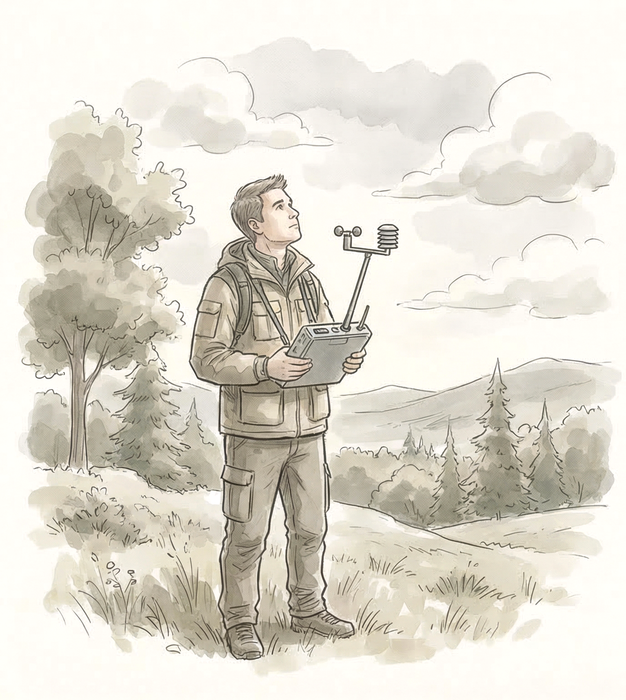
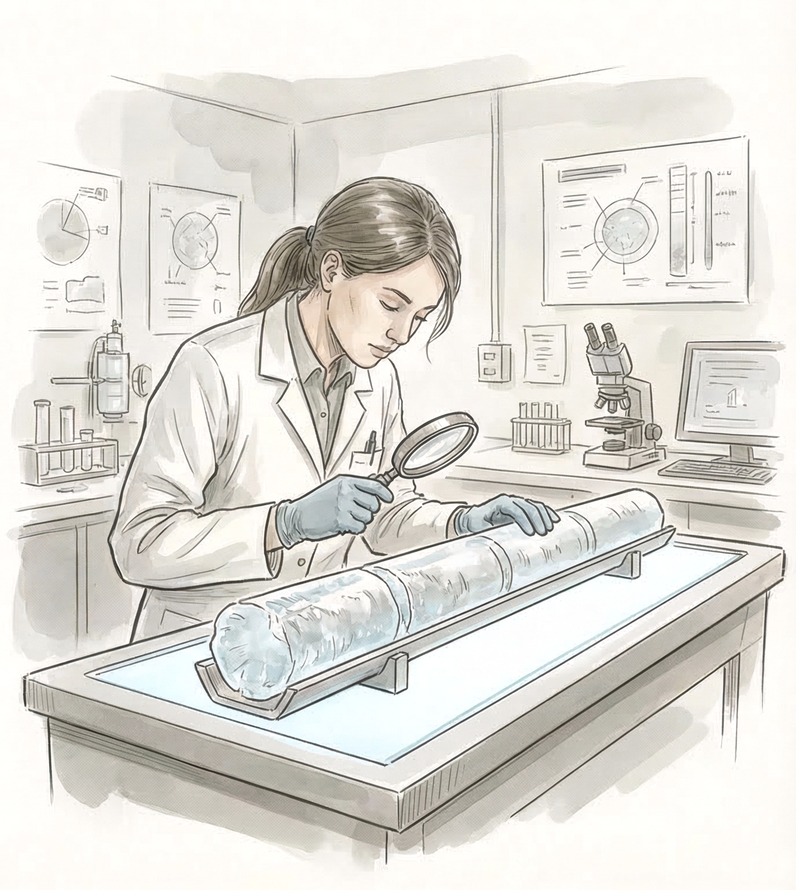
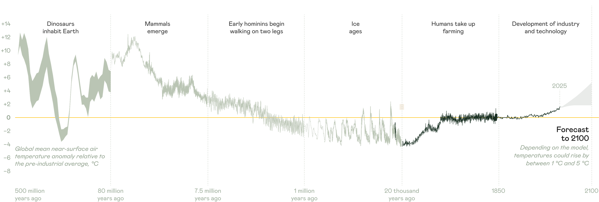
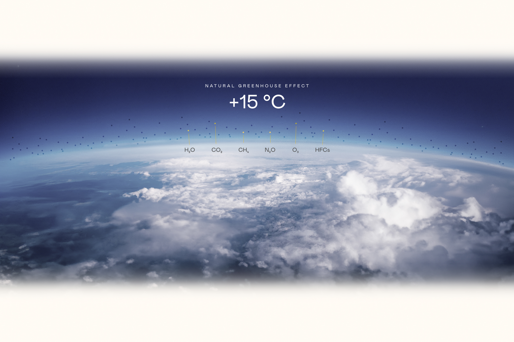
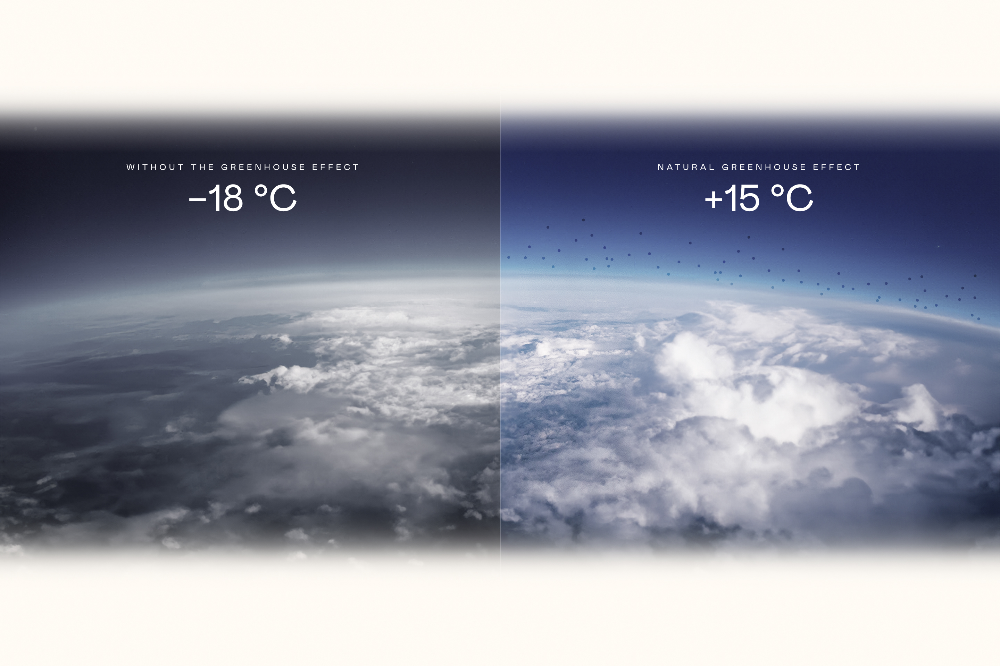
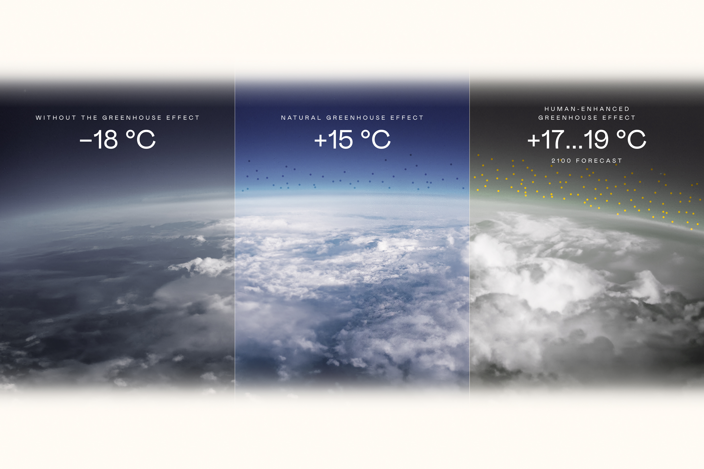
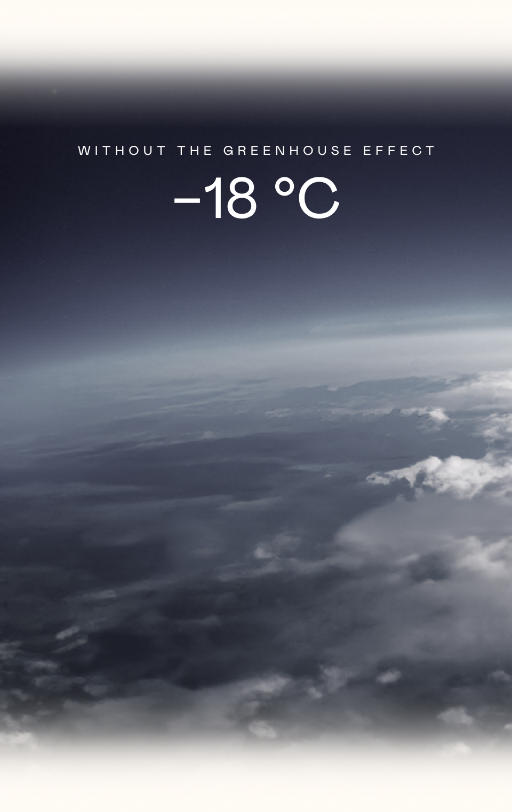
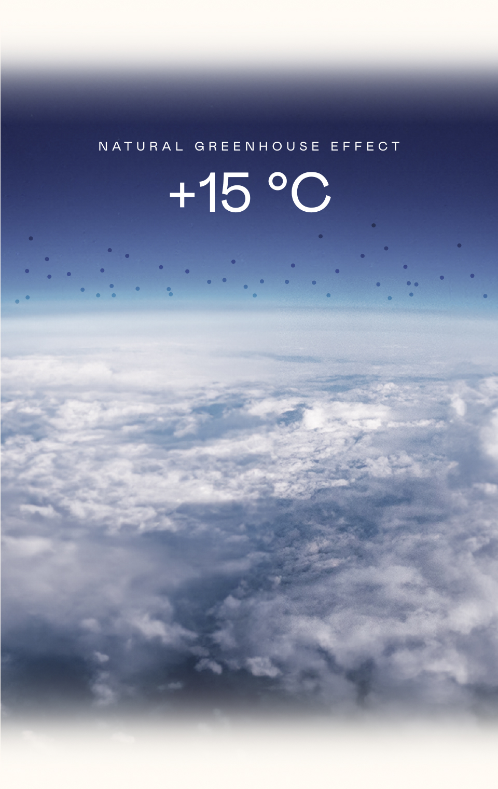
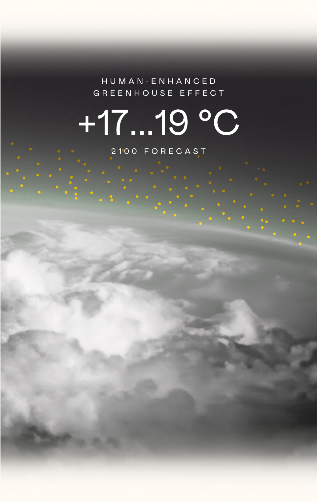
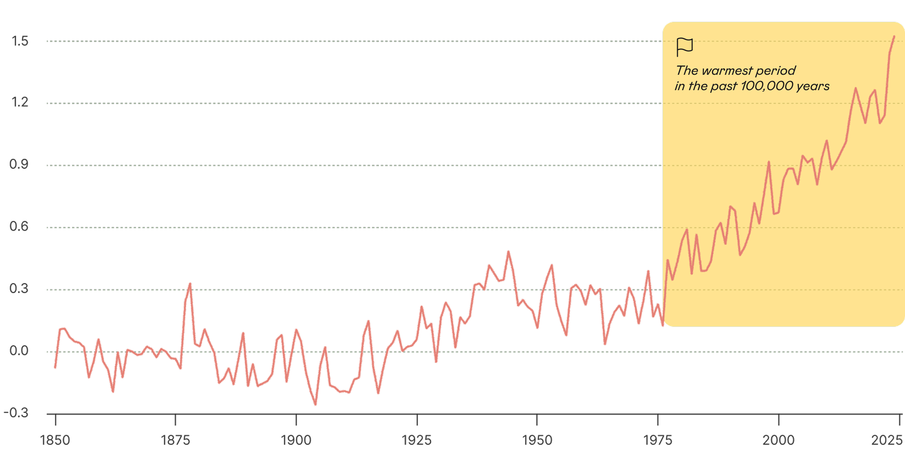

Weather
Weather describes atmospheric conditions at a particular place and time. It can change rapidly: it may be raining in the morning, with the sun coming out by lunchtime. Meteorology is the science that studies and forecasts the weather.
Even the ancient Greeks wrote about the weather. Aristotle, for example, sought natural explanations for weather phenomena in his Meteorologica.

Climate
Climate is the range of conditions across all components of the climate system – the atmosphere, hydrosphere, biosphere, cryosphere, and the upper layer of the lithosphere – that are characteristic of a particular area. Climate change is a process that takes place over decades and sometimes even millennia.
As early as 400 BC, Greek philosophers were studying how climate influenced the development of societies and differences between peoples.

Weather describes current atmospheric conditions, while climate describes the conditions typically experienced in a particular region over a long period of time.
Earth’s climate
Earth’s climate has changed throughout the planet’s history. Our planet has experienced ice ages and periods of warming, while the configuration of the continents, the composition of the atmosphere, and plant and animal life have also changed over time.

The Greenhouse effect
Earth’s atmosphere naturally regulates the planet’s temperature. It retains heat and creates the conditions necessary for life. The planet’s temperature is determined not only by its distance from the Sun but also by the greenhouse gases in the atmosphere.






Greenhouse gases trap infrared radiation emitted by Earth’s surface, preventing all of it from escaping into space. This causes air temperatures to rise.
Thanks to the greenhouse effect, Earth’s average air temperature remains at a comfortable level of around +15 °C. Without it, Earth’s average temperature would be −18 °C.
Intensive human industrial activity increases greenhouse gas concentrations in the atmosphere, amplifying the greenhouse effect.
As greenhouse gas concentrations grow, the greenhouse effect becomes stronger and air temperatures in the lower atmosphere rise. This leads to global warming.
The terms “global warming” and “climate change” are often confused or used interchangeably, but they mean different things.
Global warming is the increase in the combined near-surface air and sea surface temperatures averaged across the globe over a 30-year period.
The chart clearly shows that global warming is accelerating. While temperatures changed relatively little until the mid-20th century, the past 50 years have seen an unprecedentedly rapid rise.

Climate change encompasses a much broader range of changes, with global warming being only one part of it. These changes have been taking place since the mid-19th century, driven by rising greenhouse gas emissions from human activities.
Human activities – agriculture, industry, deforestation, and urbanisation – place increasing pressure on the environment
This leads to higher concentrations of greenhouse gases (CH₄, CO₂, N₂O) and disrupts the carbon cycle
As a result, the greenhouse effect intensifies, trapping more heat in the atmosphere
This drives changes in climate, including warming temperatures, changing precipitation patterns, ice loss, rising sea levels, and shifts in ocean currents
These changes, in turn, have serious consequences, including urban flooding, mounting damage, disasters, disease, and biodiversity loss
Different sectors of the economy generate different greenhouse gases in varying amounts. This depends on the technologies and resources they use.
The energy sector is the largest source of carbon dioxide (CO₂). Agriculture primarily generates methane (CH₄). Nitrous oxide (N₂O) and fluorinated gases make up a significant share of emissions from the chemical industry.
Can we predict climate change?
Climate change can be projected, and scientists have developed global climate models for this purpose. To improve the reliability of projections, scientists use ensembles of models. One widely used initiative is the World Climate Research Programme’s Coupled Model Intercomparison Project (CMIP). Among the models used in the project is a climate model developed by the Institute of Numerical Mathematics of the Russian Academy of Sciences.
At the heart of a climate model is a system of equations describing interactions between the atmosphere, oceans, land, glaciers, and the biosphere. Based on physical, chemical, and biological processes, the models calculate key climate variables such as temperature, pressure, humidity, and wind.
Energy does not disappear but is converted from one form to another
Describes how radiation depends on temperature and helps explain the greenhouse effect
Shows how water vapour pressure depends on temperature
Describe the motion of fluids and gases in the atmosphere and ocean
To assess how well a climate model performs, its outputs are compared with actual data from a selected historical period. This helps determine the model’s accuracy and whether its parameters need to be refined.
Scientists around the world test model calculations against actual observations and compare the results. Repeated validation of this kind increases confidence in climate models.
What goes into a climate model?
The accuracy of a climate model depends on how comprehensively it represents the real world. Models incorporate a wide range of complex natural processes and features to produce reliable projections.
Since the 1970s, climate models have evolved to incorporate an increasing number of factors and have become progressively more accurate. The 2021 Nobel Prize in Physics was awarded for the physical modelling of Earth’s climate, quantifying variability, and reliably predicting global warming.
Modern climate science in Russia
The Russian scientific community has also made a major contribution to the development of climate science. The development of climate science in Russia began long before the advent of computer models and has involved a number of outstanding scientists.
Hover over the card
Several leading institutions in Russia conduct research into climate change. Here are just some of them.
MGO
Voeikov Main Geophysical Observatory
IAP RAS
Obukhov Institute of Atmospheric Physics of the Russian Academy of Sciences
IGCE
Yu. A. Izrael Institute of Global Climate and Ecology
MSU
Lomonosov Moscow State University
INM RAS
Institute of Numerical Mathematics of the Russian Academy of Sciences
IMCES SB RAS
Institute of Monitoring of Climatic and Ecological Systems, Siberian Branch of the Russian Academy of Sciences
Now that we have explored the science behind climate change, we can turn to its visible effects. In the next chapter, we will look at how glaciers are melting, how the ocean is changing, and what is happening to permafrost.